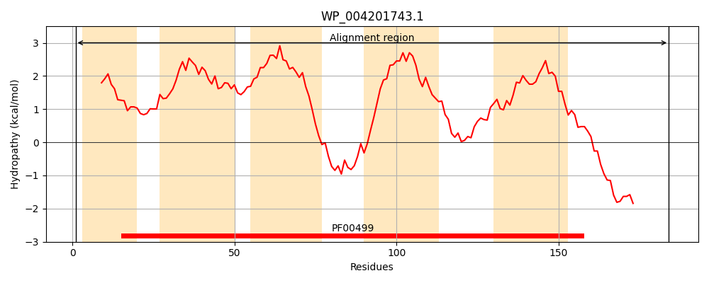
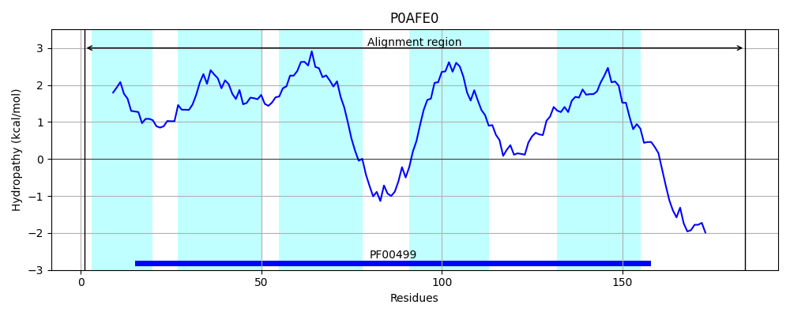
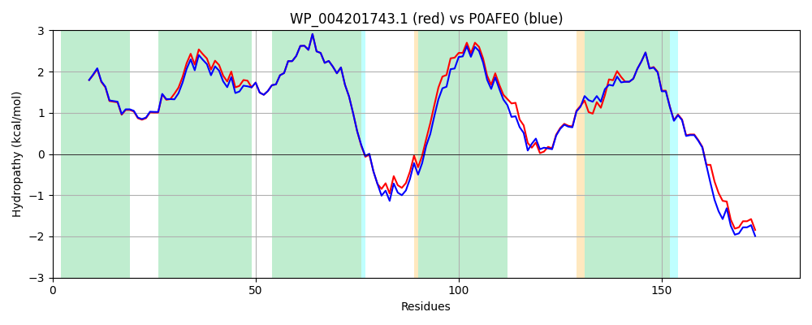

Hit Accession: P0AFE0
Hit TCID: 3.D.1.1.1
Hit Description: gnl|BL_ORD_ID|8817 gnl|TC-DB|P0AFE0|3.D.1.1.1 NADH-quinone oxidoreductase subunit J - Escherichia coli.
Mach Len: 184
e:0.000000
Query TMS Count : 5
Hit TMS Count: 5
TMS-Overlap Score: 5.500000
Predicted Substrates:CHEBI:5584;hydron
BLAST Alignment:
Score: 838 , Bit scores: 327 bits, E-value: 2.3e-116, Alignment length: 184, Percentage identity: 90
Query: 1 MEFAFYICGLIAILATLRVVTHTNPVHALLYLIISLLAIAGVFFSLGAYFAGALEIIVYAGAIMVLFVFVVMMLNLGGSEIEQERKWLQPGIWIGPAILSAVLLVVIVYAILGINDQGIDGAAINAKEVGIALFGPYVLAVELASMLLLAGLVVAFHIGREERAGEVLSNRVNDSDKRKTEEHA 184
MEFAFYICGLIAILATLRV+THTNPVHALLYLIISLLAI+GVFFSLGAYFAGALEIIVYAGAIMVLFVFVVMMLNLGGSEIEQER+WL+P +WIGPAILSA++LVVIVYAILG+NDQGIDG I+AK VGI LFGPYVLAVELASMLLLAGLVVAFH+GREERAGEVLSNR +DS KRKTEEHA
Sbjct: 1 MEFAFYICGLIAILATLRVITHTNPVHALLYLIISLLAISGVFFSLGAYFAGALEIIVYAGAIMVLFVFVVMMLNLGGSEIEQERQWLKPQVWIGPAILSAIMLVVIVYAILGVNDQGIDGTPISAKAVGITLFGPYVLAVELASMLLLAGLVVAFHVGREERAGEVLSNRKDDSAKRKTEEHA 184 | Protein Hydropathy Plots: |
|---|
|  |  |
Pairwise Alignment-Hydropathy Plot:
|
|---|
|  |